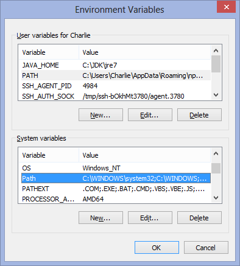
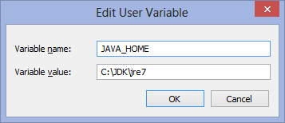
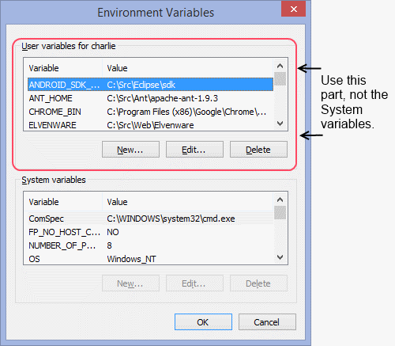
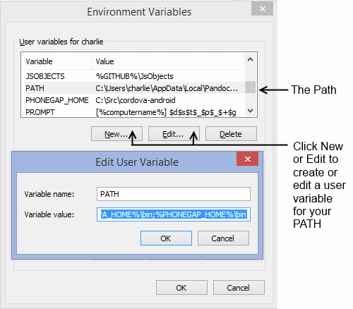
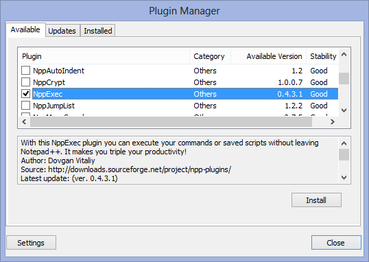
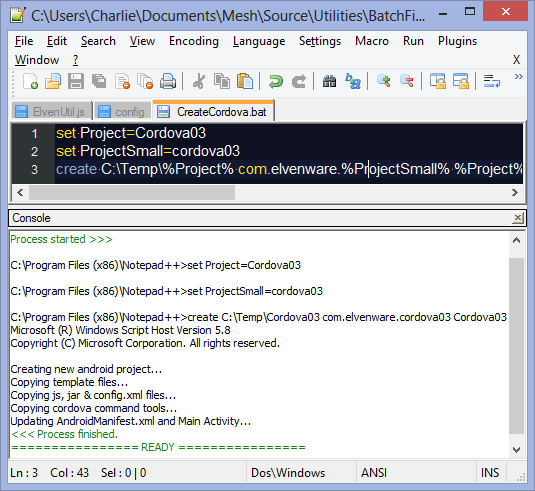

WindowsFaq
Table of Contents
- Windows FAQ
- OS and Architecture
- Searching in Windows
- Permissions to Access a File or Directory
- Stop hiding File Extensions
- Open a Command Prompt from the Windows Explorer
- Set the Path or Other Environment Variable
- Change Your Prompt
- More on Paths
- Windows Experience Index
- Command Line
- Starting Powershell
- Grep with Powershell
- Turn on Scripting in PowerShell
- Password Timeout on Windows Server
- Windows 8 Shortcuts
- Run a Batch File from NotePad++
- Turn off the "Only Secure Content is Displayed" Warning in IE
- Synaptic Touchpad
- Google Drive
- Start a batch file from a Shortcut
- Turn Off System Sounds
Windows FAQ
Here are some tips on using Windows.
OS and Architecture
Run these commands:
wmic os get caption
wmic os get osarchitecture
For instance:
>wmic os get caption
Caption
Microsoft Windows 8.1 Pro
>wmic os get osarchitecture
OSArchitecture
64-bit
Searching in Windows
For searching on the web, go here Usually the simplest way to search in Windows is in a command shell with the findstr utility. There is also something called called select-string to be used in PowerShell.
If you are a masochist, and want to try the built in Windows search found in File Explorer and Start Page, then there is no need to abandon all hope. The key to the badly broken Windows Search utility is the File Types page of the Advanced dialog in the Indexing Options applet from the Control Panel. To get started:
- Open the Control Panel,
- Find the Index Options applet,
- Press the Advanced button,
- Turn to the File Types page,
You can now customize which files Windows will search. In particular, you can override the sometimes bizarre defaults for search set up by Windows.
For years, I thought Windows Search was not merely badly broken, but completely broken. It usually did not return results from files that I knew existed, even when I was in the same directory as that file, and even when that directory contained only a very few small files.
It turns out that there was a reason that Windows Search appeared to be so broken: Windows does not index all the files on your system. In fact, it indexes only files with certain file extensions that are carefully chosen to be nearly useless to anyone with an IQ over room temperature. Even then, it sometimes indexes only the file names, and not the file contents.
It is, fortunately, possible to partially repair the damage caused by this regretable policy which is, admittedly, sometimes useful to newbies. In particular, if you are a newbie who only uses Word and Excel files, then it is helpful if you never see results from any other kind of file. However, it might have been helpful to others to provide some kind of explanation for why a company of Microsofts caliber, which has, after all, literally poured billions of dollars into search, could not turn up results that most students in a first year programming course could easily create.
Search for the word angular only in HTML files:
angular type:.html
Here is the string to search for the word favicon.png only in HTML files:
favicon.png type:.html
The above search does not look for the file called favicon.png, it looks for string **favicon.png" in HTML files.
I have to confess, however, that even though I have asked Windows to begin searching the contents of certain types of files, it does seem like it still has problems. As a result, I recommend that you look below for the sections on
Permissions to Access a File or Directory
Suppose you want access to the Logs folder. Here is what to do:
Sign on to your machine with Admin priviliges, or start a copy of the Windows Explorer with Admin privileges by right clicking on it and choosing "Run as Administrator." Then go the logs folder: c:\inetpub\logs. Right click on the Advanced Logging folder and choose Properties. Turn to the Security page in the AdvancedLogs Properties dialog that launched when you chose Properties. Choose Edit and the press the Add button and add yourself in the "Enter the object names to select" input box. Choose Check Names to be sure all is working correctly. Close all the dialogs, and you should have the rights to read files in that directory. You can give yourself editing (modify) rights, but you usually don't need those when working with Log files.
If the system won't let go of a document or text file that you have opened in an editor or elsewhere, there is a SysInternals tool called Process Explorer that will break the connection and free the resource:
- SysInternals Web Site Process Explorer
- Windows 7: The IT Pro at Home: Tips and Tricks.aspx)
- 20 Essential PC Shortcuts
- File Permissions
Stop hiding File Extensions
It is important for developers to be aware of the extensions for files. For instance, we don't want to name a file index.html, only to find out that Windows is hiding it's true name, which can be, in a worst case but very common scenario: index.html.txt. Most of you probably know this, but here is how to stop hiding file extensions for know types on Windows.
Open the Windows Explorer, press Alt to expose the menu, and then choose Tools | Folder Options | View and uncheck Hide extensions for known file types. Then press the Apply to Folders button so that all the directories on the machine are listed the same way.
1) Open Windows Explorer
2) Press the Alt key to reveal the menu
3) Choose Tools | Folder Options
4) Turn to the View Page
5) Turn off "Hide extensions for known file types."
Open a Command Prompt from the Windows Explorer
In Windows XP or later, just go to the Address bar (Ctrl-D) and type in the word CMD. Hit enter and it will open the command prompt in the current directory.
Set the Path or Other Environment Variable
Select:
- Control Panel\System and Security\System
- Advanced System Settings.
Click the Environment Variables button near the bottom of the System Properties dialog. You will see the Environment Variables dialog. From here you can edit existing environment variables and create new variables.
In the screen shot below, note the local PATH variable for the user only, and the PATH variable for everyone who uses the computer. Even if you don't have the rights to set the PATH for everyone on a machine, that is probably for the best, as changing the System path can be dangerous. You should have the rights to set your own path. More on this PATH issue later in this section. Note also the JAVA_HOME environment variable.

Figure XX: Setting Environment Variables

Figure X1: Setting the Java_HOME environment variable.
You can set environment variables with PowerShell:
[Environment]::SetEnvironmentVariable("Path", "$env:Path;C:\Python27\;C:\Python27\Scripts\", "UserName")
It usually wisest to change only the USER part of the path (the top part of the Environment variables dialog). If you play with the System path, you can make errors that will cause chaos throughout your system. But if we only mess with our part of the path, then that is less likely to happen. If there is no PATH variable in the User section, you can always create one, using the same technique you used to create the JAVA_HOME and other environment variables. Windows will add the two paths together, and treat them as one.


Here is an example of how to use a command that will automatically set some user environment variable from the command line:
SetX JAVA_HOME "C:\Program Files\Java\jdk1.7.0_45"
You only need the quotes around the second item if contains a space. If there are no spaces, then you can write something like this:
SetX JAVA_HOME C:\Dev\jdk
In the code shown above, we are setting environment variables:
setx [ENVIRONMENT VARIABLE] [VALUE]
By default, the variable is set for the current user. If you want to change the entire environment for all users, look in the /M parameter. Here is how the help describes that variable:
/M Specifies that the variable should be set in the system wide (HKEY_LOCAL_MACHINE) environment. The default is to set the variable under the HKEY_CURRENT_USER environment.
Here is an example script showing what you can do with this command:
SetX JAVA_HOME "C:\Program Files\Java\jdk1.7.0_45"
SetX ANT_HOME C:\Src\Ant\apache-ant-1.9.3
SetX PHONEGAP_HOME C:\Src\cordova-android
SetX ANDROID_SDK_HOME C:\Src\Eclipse\sdk
You can read more about SetX here:
http://technet.microsoft.com/en-us/library/cc755104.aspx
Or just type the following at the command prompt:
setx /h
Change Your Prompt
I like it like this:
[%computername%] $d$s$t$_$p$_$+$g
With that setting for my prompt, the prompt where I type is nearly flush left rather than way out on the right:
[CEDARISLE] Wed 04/29/2015 22:26:49.62
C:\Users\charlie
>
The environment variable is called PROMPT, and the value is as shown above.
More on Paths
To put something on your path, you need to put the directory where the executable you want to run on your path. The first step is to test if it is on your path already. Suppose, for instance, you want to see if Geany is on your path. To find out, use the where command, passing the name of a program:
>where geany.exe
C:\Program Files (x86)\Geany\bin\Geany.exe
This example shows that Geany is on my path, and tells me where it is located.
It is a mistake to put the name of an executable on your path rather than the directory in which it resides. Suppose you want to be sure that geany is on your path:
Correct:
C:\Program Files (x86)\Geany\bin;
Incorrect:
C:\Program Files (x86)\Geany\bin\Geany.exe;
Another error I have seen is assuming that the OS will find executables in a directory nested beneath a directory on your path. Suppose you add this to your path:
C:\Users\Charlie\Bin
And suppose Putty is in this folder:
C:\Users\Charlie\Bin\Putty
That won't work. The OS will not find executables located in the Putty directory. To fix the problem, you need to either put C:\Users\Charlie\Bin\Putty on your path, or else move the executables from the Putty directory into the Bin directory.
By the way, on my system, the following are two ways of saying the same thing:
C:\Users\Charlie\Bin
%USERPROFILE%\Bin
In other words, %USERPROFILE% is a built-in environment variable that points at my home directory. The variable is baked into Windows automatically when Windows is installed.
Windows Experience Index
On Windows 8.1 or later run this at the command prompt:
winsat prepop.
Then open a PowerShell window and type:
Get-WmiObject -Class Win32_WinSAT.
You should find results that look like this:
CPUScore : 8.1
D3DScore : 4.9
DiskScore : 8
GraphicsScore : 4.6
MemoryScore : 8.1
On Vista through Windows 7, bring up the Control Panel | System and Security | System, or follow this link.
Using this second technique, you should get results that look like this:
WEI Overall 5.9
WEI Processor 7.5
WEI Ram 7.5
WEI Graphics 7.5
WEI Gaming 7.5
WEI Hard Disk 5.9
Command Line
There are many ways to use the command line.
###FindStr
Case insensitive search for sd in all files with the extension *.md:
findstr /s /i "\<sd\>" *.md
Starting Powershell
Right click on the PowerShell icon and start PowerShell ISE. It is much more powerful than a standard PowerShell prompt.
Grep with Powershell
- select-string
Turn on Scripting in PowerShell
There are a number of ways, but a good choice is:
Set-ExecutionPolicy RemoteSigned
This lets you run scripts that you created, but not scripts downloaded from the Internet. If you need to run any script:
Set-ExecutionPolicy Unrestricted
To revoke rights:
Set-ExecutionPolicy AllSigned
If you want to learn about signing:
Get-Help About_Signing
Don't you love it? Dashes in one place, underscores in the other!
Password Timeout on Windows Server
Go here and set the set Maximum password age.
Start | Administrative Tools | Local Security Policy | Account Policies | Password Policy
If you set it to 0, then it will never time out.
Windows 8 Shortcuts
To get to the start menu: I press the Windows key. I'm there instantly. I want to get back to the desktop. I press the windows key. (Alternately Windows + D). I'm back at the desktop instantly. Very fast, very simple.
The fastest way to completely pause and restart your machine is to put it to sleep. With a laptop, just close the lid and it goes to sleep, just as it did in Windows 7. Then when you want to restart, just open the lid and (optionally) type in your password. That is exactly the same as on Windows 7. Alternately, just press Windows + L, and walk around with your laptop lid open, then you don't have to sleep and wake, though that takes less that 5 seconds on my machine. There are options to change whether a computer sleeps when you close the lid.
NOTE: When I am on Ubuntu Unity, I get to the Start screen in exactly the same way I do in Windows 8: I press the Window key.
As for run: just press Windows and click on or type the name of your app. Either way, the app starts running. Alternately, press Windows + R to start the old Run dialog from Windows 7.
Starting the control panel and related features: The simplest way to do most of these tasks is just to press Windows + X. No simple way to describe what that does, but try it: it gets you instant access to the Control Panel, Task Manager, File Explorer, Search, Disk Management, Device Manager, Power Options, etc.
http://windows.microsoft.com/en-US/windows-8/new-keyboard-shortcuts#1TC=t1
Run a Batch File from NotePad++
In Windows, when I create a batch file, I am usually working in NotePad++. It would be simplest if I could edit the batch file, and run it, directly from inside NotePad++. Fortunately, it is easy to run batch files without leaving the NotePad++ editor.
- Install the NppExec plugin
- Choose Plugins | Plugin Manager | Show Plugin Manager
- Install the NppExec plugin, as shown in Figure 0X. NotePad++ will restart
- Press F6 to launch NppExec.
- Type in this command "\$(FULL_CURRENT_PATH)"


Turn off the "Only Secure Content is Displayed" Warning in IE
In my case, at least, I tend to get this warning because I am visiting a site that has HTTPS (secure HTTP) enabled, yet one of the HTML files on the site links in a script using HTTP rather than HTTPS. Since I frequently use CDN to link in jQuery via HTTP, I don't see this as a big security risk, and like to turn it off for selected sites that I trust, and in particular for sites that I maintain. This type of linking is called "mixed content" because there is a mixture of HTTP and HTTPS being used on the same site. Microsoft fears that this means that the HTTPS site you are visiting is not as secure as it could be.
To turn off the warning, do two things:
- Add the web site that is giving the warning to your trusted zone.
- In the trusted zone, enable mixed content.
More specifically, in Internet Explorer,
- On the upper right, choose Gear | Internet Options | Security. (Gear is the icon that looks like a gear.)
- Select Trusted Sites, click the sites button. Make sure MyBCC or whatever site you want to use is one of the trusted sites.
- Select Custom level
- Find the Miscellaneous section and set Display mixed content to enabled.
Synaptic Touchpad
There is an option on the Mosue Properties dialog that lets you set whether the Synaptic Touchpad is turned on or off. Unfortunately, due to a series of incredible screw ups, I can't access it on my system without a mouse. Therefore, if no mouse is plugged in, I can't turn on the Touchpad, and hence I have no mouse and no touchpad. There is, however, a workaround. When you have the mouse plugged in, use the Synaptic tools to set up two profiles, one for use when the mouse is plugged in, and one for use without the mouse. With these profiles set up you can, on Windows 8, use the:
- Windows Key + W to bring up Settings
- Type Synaptic and bring up the profile
- Use the Load button (Alt L) to load the profile you want.
Google Drive
If you need to change the folder where Google Drive syncs your files on your local machine, follow these steps:
- Choose Quit Google Drive by clicking the icon in the system tray at the bottom right of your screen
- Use Windows explorer or the command prompt to rename your Google Drive folder
- Go to the start screen to restart Google Drive
- Google drive restarts with errors.
- Right click on the icon in the system drive and choose "Google Drive Folder is Missing"
- You will be able to search for your renamed folder
- When you are done all should be good.
Start a batch file from a Shortcut
Go to the desktop, right click, and create a shortcut by selecting New | Shortcut. Set it up to run cmd.exe. Pass in the name of a batch file using the /k switch. For instance, the following will create a short cut that opens the Windows command line and runs DosAlias.bat:
%25SystemRoot%25%5Csystem32%5Ccmd.exe%20/k%20%25USERPROFILE%25%5CBin%5CDosAlias.bat
You might want to pin the shortcut to the taskbar. To do so, right click on the shortcut, and choose Pin to taskbar.
To edit an existing shortcut, right click on it, then choose properties. You may have to re-pin the shortcut to the taskbar after altering its properties.
Turn Off System Sounds
- Control Panel\Hardware and Sound
- Select Change System Sounds
- Turn off Default Beep at the bottom of the dialog by setting Sounds to none
If you want to turn off sounds at the command line in Windows 8, click on the Speakers icon in the Tray, and open the Volume Mixer. You should see an item labaled Console Window Host. Set its volume to zero.